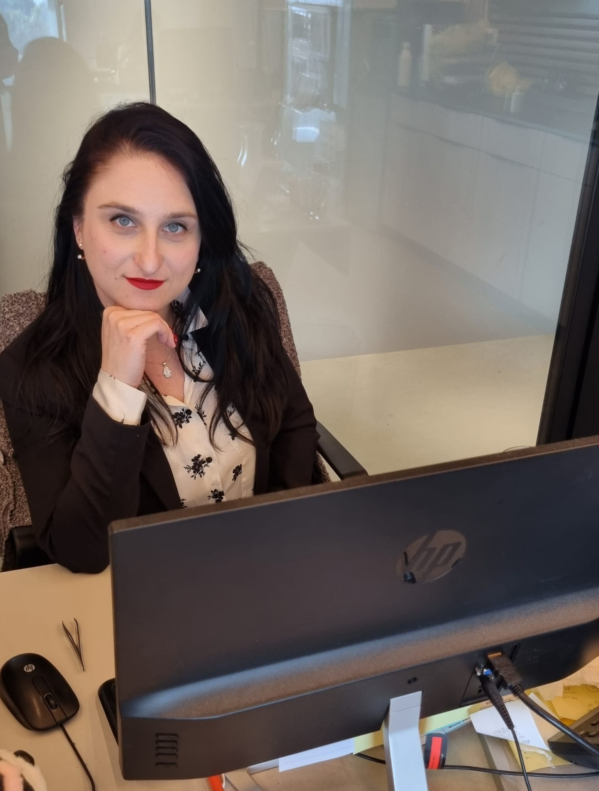
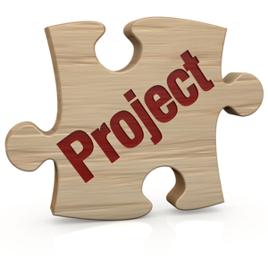

I am 32 years old, I have Bachelor’s degree in Criminology and Psychology, with 5 years of experience in employee recruitment.
Recently transitioned into Software Testing (QA) to follow my passion for quality and detail-oriented work.
🚀 Actively seeking a Junior QA / QA Tester position at a large, dynamic company where I can grow and contribute to high-quality software delivery.
⚙ Writing test documentation (STP, STD, STR)
⚙ Manual testing: test cases, test scenarios, and bug reports
⚙ Strong understanding of QA methodologies (Agile, Waterfall)
⚙ Web testing experience (Chrome, Edge, Firefox)
⚙ Familiar with bug tracking and test management tools (JIRA, TestRail)
⚙ Experience using DevTools
⚙ Platforms: Windows, Web applications
⚙ Testing: Manual QA, test documentation, bug tracking
⚙ Tools: JIRA, TestRail, DevTools, ChatGPT<
⚙Basic knowledge: HTML, CSS, SQL

Detail-oriented Software Tester with a strong analytical background.
Dedicated to maintaining high standards through rigorous testing methodologies and technical problem-solving.
Ready to bring a fresh perspective and a high level of reliability to your QA team.

A comprehensive manual testing project for the SHEIN platform. The project covers functional, UI/UX, and regression testing, ensuring a smooth shopping experience.
End-to-end QA testing of the MyFitnessPal app, focusing on functional validation, data synchronization, and UI/UX consistency across mobile platforms.